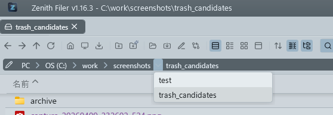
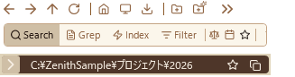
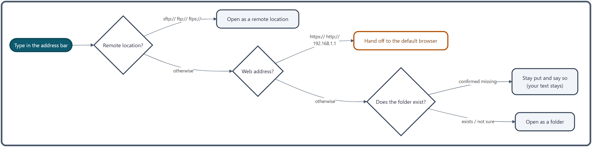

Address Bar and Breadcrumb¶
The bar that shows where you are and takes you somewhere else with a click or by typing. For Back, Forward, Up and the PC view, see Navigation.
What you can do¶
| To do this | Do this |
|---|---|
| Jump several levels up at once | Click a folder name in the breadcrumb |
| Go to a sibling folder | Click the "›" after a folder name and pick from the list |
| Go somewhere by typing | Click the pencil, click an empty part of the bar, or press Ctrl + L, then type a path and press Enter |
| Open a server or a web page | Type sftp://…, https://… and so on, then press Enter |
| Send files up the tree | Drop them on a folder name in the breadcrumb |
| Keep the current location | ★ adds it to Favorites; the copy button puts the path on the clipboard |

The address bar is the bottom row of the pane header. Normally it shows where you are as a breadcrumb (one button per level), and it turns into a text box only when you want to type.
How to use it¶
Moving with the breadcrumb¶
- Click a folder name to go to that level. The "PC" at the start takes you to the PC view.
-
Click "›" to list the folders inside that folder, then pick one to go there. The "›" points down while the list is open; press
Escor move the mouse off the list to close it. The last level (the folder you are in) has no "›".
The "›" after "PC" lists your drives, with the same names as the PC view (such as "OS (C:)"). - Long paths: when the path does not fit, the bar keeps the current folder (the right end) in view and lets the leading levels slide off to the left. Tilt the mouse wheel left or right to scroll them back into view. A very long folder name is cut off with "…".
Typing a path¶
-
Switch to the text box in any of these ways. The whole path is selected, so you can press
Ctrl + Cto copy it or just type over it.- Click the pencil icon on the left
- Click an empty part of the bar (anywhere that is not a folder name)
- Press
Ctrl + L(the default key; change it in Settings → Shortcut Keys)

-
Type a path and press
Enterto go there. - Move the mouse off the address bar to go back to the breadcrumb. Clicking the "›" icon on the left does the same.
If you prefer typing, you can leave it switched on. Each pane (A and B) remembers whether it shows the text box or the breadcrumb, including the next time you start the app.
What you can type¶
| Type | Example | Result |
|---|---|---|
| A folder path | C:\Users\Public, D: |
Opens the folder (D: is treated as D:\) |
| A network share | \\server\share\folder |
Opens the folder |
PC |
PC |
Opens the PC view |
| A remote server | sftp://user@host/var/www, ftp://…, ftps://… |
Opens the folder on the server (see FTP/SFTP) |
| A web address | https://example.com, 192.168.1.1 |
Opens it in your default browser |
- Web addresses: anything starting with
https://orhttp://goes to your default browser. A bare IP address such as192.168.1.1, as used for router or NAS admin pages, works too:http://is added for you (it also works with a port such as192.168.1.1:8080or a path such as192.168.1.1/admin). Nothing is added to the history, and the address bar goes back to showing the current folder. - What does not open: a bare host name such as
example.com(it cannot be told apart from a folder with the same name, so addhttps://), environment variables such as%APPDATA%, shell names such asshell:startup, and file paths (only folders open). - When the folder is not found: you stay where you are and a "Folder not found" notification appears. What you typed stays in the box, so you can fix the typo and press
Enteragain. - Server suggestions: after 3 characters, up to 8 of your registered remote servers whose name, host or address contains what you typed appear under the box. Press
↓to move into the list, thenEnteror a click to open that server.
Dropping files on the breadcrumb¶
Drag files or folders selected in the file list onto a folder name in the breadcrumb and release them to copy or move them into that folder.
- Left-drag with no key held: moves within the same drive, copies to another drive or a server
- Hold
Ctrlto copy; holdShiftto move - Right-drag: when you release, a menu offers "Copy here", "Move here" and "Create shortcut here"
Dropping an Outlook email saves it as a file, and dropping an address from a browser creates a .url shortcut. See Drag & Drop for the details.
★ and copying the path¶
- ★ (add to Favorites) opens a dialog to add the current folder to Favorites. Enter a name and an optional description; once it is added, the nav pane switches to the Favorites view and briefly highlights the new entry. This works even while the Favorites view is locked. If the folder is already there, the ★ shakes red to tell you.
- The copy button copies the current folder's path to the clipboard and shows a notification. In the PC view it copies "PC" (typing "PC" in the address bar takes you back there).
How it works¶
Where typed text goes¶

When you press Enter, the text is checked in this order, and the first match wins.
- Remote? If the part before
://issftp,ftporftps(in any letter case), it opens as a folder on that server. If the server is not registered yet, the registration screen opens, pre-filled with what you typed. If the address cannot be read (an invalid port, a missing host and so on), a notification tells you why. Addresses with a password in them (user:pass@host) are refused: addresses are kept for tab restore and in the history, so the password lives, encrypted, in the connection settings instead. - Web address? Anything starting with
http://orhttps://that has a host, and IPv4 addresses such as192.168.1.1. An IP address counts only if all four numbers are between 0 and 255, and leading zeros such as192.168.01.1are refused (some software reads them as octal, which could take you somewhere you did not mean to go). The browser is started on a background thread, so a slow browser launch never freezes the window. - Anything else is a folder. Before opening it, the app checks that the folder exists and stops only when it is confirmed missing, telling you the folder was not found (opening from Favorites or the history does not show this notification). The check waits at most 2 seconds (0.3 seconds for network folders); if there is no answer by then, it tries to open the folder anyway, so a slow network folder is never blocked just because the check timed out.
Folder paths are tidied up before opening: D: becomes D:\, and a trailing \ is removed (except at a drive root).
How the breadcrumb is built¶
The breadcrumb is rebuilt on a background thread each time you move. What comes first depends on the kind of location.
| Location | Breadcrumb |
|---|---|
| On a drive | PC › OS (C:) › Users › … |
| A network share | \\server › share › … (no PC at the start) |
| A remote server | user@host › var › www … (click the first one to go to the top of the server) |
| A phone or camera | PC › device name › Internal storage › … |
Each name comes from Windows, the same one File Explorer shows (drive labels such as "OS (C:)" included). If Windows cannot supply a name, the parts of the path split at \ are shown instead.
The "›" list¶
- The list is built on a background thread when you click "›", by reading that folder. It is sorted by name (ignoring letter case) and has no size limit.
- Folders that cannot be read, system folders and temporary folders are left out. Hidden folders appear only when General → Show hidden files and folders is turned on in Settings.
- For remote servers, phones and cameras, and a bare
\\server, the folder cannot be read this way, so clicking "›" opens nothing. - Once the list has been open for 0.35 seconds, it closes when the mouse leaves both the list and the "›".
Related¶
- Navigation — Back, Forward, Up, the PC view, and moving to and from File Explorer
- Favorites — organize the folders you added with ★
- Drag & Drop — the copy and move rules
- FTP/SFTP — register remote servers
- File Panes — the other rows of the pane header (buttons and search)